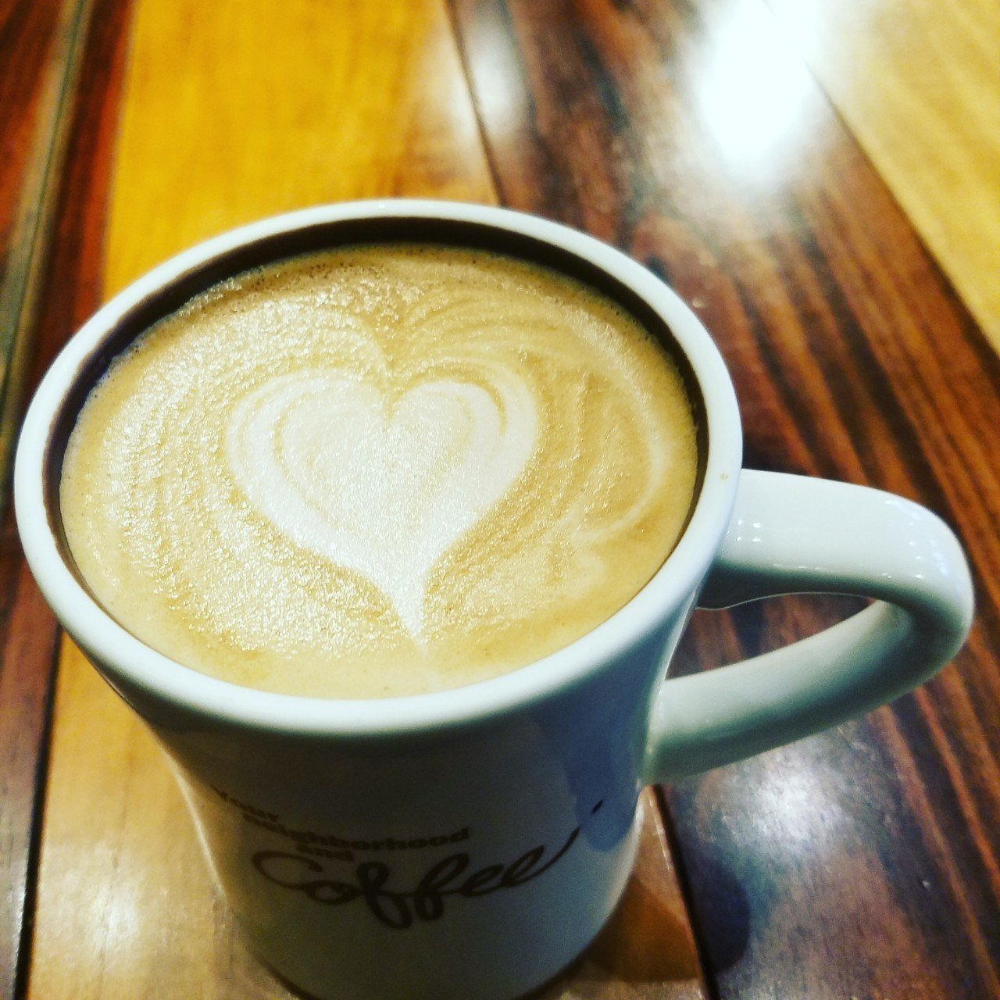

「ご注文は如何なさいますか？」
私は都会の一角に佇む、とある喫茶店にいた。初めて入った店ではあるが、何となく懐かしい香りがした。
軽快なジャズの音楽に、バラエティ豊かな本の数々。薄暗い照明が特徴的な店の雰囲気は、日常の喧騒すら忘れさせてくれる。
ここに至るまでの過程は実に簡単である。私は昔からコーヒーが好きなのだ。
私はここに来る前に、ある病院の前にいた。
西暦1988年の3月21日。この日は大学時代に付き合っていた彼女の命日である。
私は科学者として絶対にやってはいけないこと、つまり過去の事実を変えるべく、ここにやって来たのだ。
彼女とは友人の紹介で出会った。その時もこんな喫茶店だったな。40年以上も前のことを目を瞑ったまま思い出す。
彼女は同じ大学に通う女子大生で、音楽が好きだった。あとよく本も読んでいた。時々本の貸し借りなんかしてお互いの趣向を知ろうとした。
お互い大のコーヒー好きで、待ち合わせは必ず小さな喫茶店。彼女の笑顔が目に浮かぶ。あの時は何もかもがキラキラ輝いていた。
でも、神は時に残酷なことをする。彼女は大学卒業を間近にした3月に、私を残して旅立ってしまったのだ。
44年前の世界で、必死に彼女の病室に向かって走った。
当時の私はどうしても欠席できない学会のため、彼女の病室に行けなかった。彼女の命が危ないことを知っておきながら。
病気なんかに負けてほしくないという願いは叶わず、彼女の抜け殻のそばで泣いた。子どものようにわんわん泣いた。
泣き果てると、今度はあの日の自分を責め続けた。どうして怒鳴られても罵声を浴びせられても、彼女のもとに行かなかったのかと。
死んだ世界で会う前に彼女に会いたい。その一心で私は念願のタイム・マシンを完成させたのだ。
303号室。息を切らしながら、病室のドアをゆっくりと開けた。
ベッドには若い彼女の寝顔があった。その穏やかな顔を見て不意に涙が込み上げてきたが、必死に堪えた。
ゆっくりベッドに近寄ってみると、1冊の本が読みかけてあった。喫茶店特集の雑誌のようだ。その時、彼女にも夢があったことを思い出した。
早速2032年から持ってきた彼女の病気を治すための薬を病室に置いていくために取り出そうとする。
だが、ポケットに手をいくら突っ込んでもその薬がない。なぜ……？ 必死に思考を巡らせた。そうか……！ ここまで走って来たから、きっと途中で落としたのだ！
そんな単純な事実に気づき、すぐに来た道を戻ろうとしたが、廊下の先では看護婦たちが巡回のためこちらに向かって来る足音が聞こえている。
まずい、この世界で過去の人物と接触すると、存在しない時間が生じ、それが原因で正常に未来へ戻れなくなる。私は致し方なく反対方向を走って未来へ帰ることにした。
「コーヒーとサンドウィッチ。お腹が空いているから早めに頼むよ」
カウンター席に座り、青年の店員にそう注文をつけた。客は私のほかに2人。穏やかな時間が流れる。そうしていると、注文通りコーヒーとサンドウィッチがやってきた。
そのコーヒーに口をつけると、ふと優しい時代のことを思い出した。
大学のキャンパスに2人で寝転んで、空を眺めていたこと。将来なりたいものについて語り合ったこと。あの頃は夢があったこと。
少し疲れた自分の顔を映すコーヒーは、ほのかに湯気が立っている。今でも君を助けることができなかった。いつの間にか、また自分を責めていた。
そんな時に、私の後ろのテーブル席に座っている老夫婦の会話が聞こえてきた。
「実は……22歳のこの日、死にかけたのよ。嘘じゃないわ。あなたと出会う少し前に。でも、奇跡的に助かったの。それと……その後、当時の彼は何処かに行ってしまった。なぜかこの喫茶店に来ると、その日々を鮮明に思い出すのよ」
老婆は優しくそう言った。私は振り向かず、高鳴る鼓動を必死に抑え、ひたすらその声に耳を傾けていた。
あの頃を思い出しながらコーヒーを飲む。その味はいつもよりちょっと苦い気もしたが、なんだか清々しい気持ちになった。
大好きなこの喫茶店では、今日も軽快なジャズの音楽に乗せて、1日が回っていく。